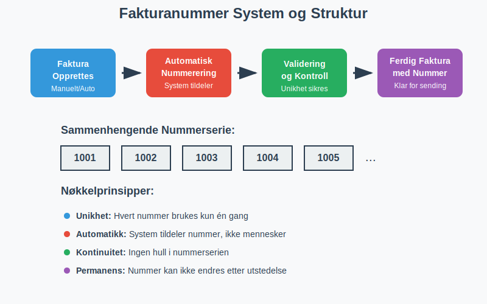
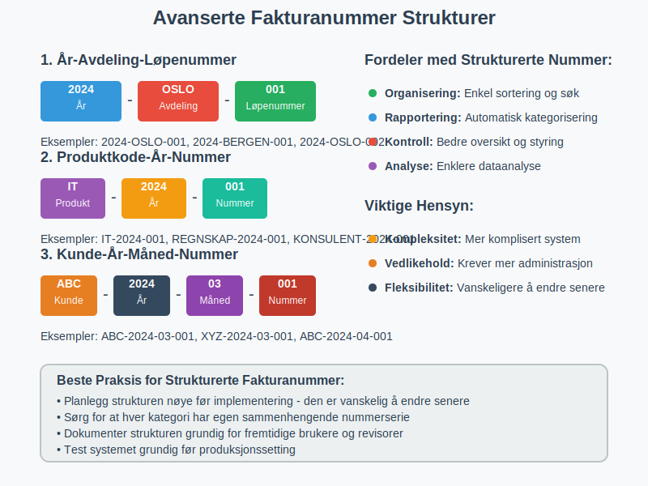
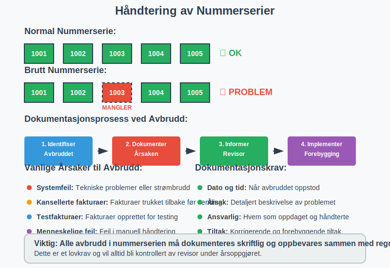

Et fakturanummer er en unik identifikator som tildeles hver faktura for å sikre sporbarhet, organisering og juridisk etterlevelse i regnskapsføringen. I Norge er korrekt nummerering av fakturaer ikke bare en praktisk nødvendighet, men også et lovpålagt krav som reguleres av bokføringsforskriften.
Fakturanummer spiller en kritisk rolle i bilagsføring og er essensielt for korrekt dokumentasjon i regnskapet.
Lovkrav til Fakturanummer i Norge
I henhold til bokføringsforskriften § 5-1 må alle fakturaer ha et unikt, maskinelt tildelt nummer som er en del av en sammenhengende serie. Dette kravet sikrer at ingen fakturaer kan forsvinne eller manipuleres uten at det oppdages.

Juridiske Krav til Fakturanummerering
- Unikhet: Hvert fakturanummer må være unikt innenfor bedriftens system
- Maskinell tildeling: Nummeret må tildeles automatisk av systemet, ikke manuelt
- Sammenhengende serie: Ingen hull eller hopp i nummerserien uten dokumentert årsak
- Kronologisk rekkefølge: Fakturaer skal normalt nummereres i kronologisk rekkefølge
- Permanent: Fakturanummer kan ikke endres etter at fakturaen er utstedt
Fakturanummer Systemer og Strukturer
Det finnes flere måter å strukturere fakturanummer på, avhengig av bedriftens størrelse, kompleksitet og behov for organisering.
Enkle Nummerserier
For mindre bedrifter er ofte en enkel, fortløpende nummerserie tilstrekkelig:
| Eksempel | Format | Beskrivelse |
|---|---|---|
| 1001, 1002, 1003… | Fortløpende | Starter på et bestemt nummer og øker med 1 |
| 2024001, 2024002… | År + løpenummer | Inkluderer årstall for bedre organisering |
| F001, F002, F003… | Prefiks + nummer | Bokstav eller kode foran nummeret |
Avanserte Nummerstrukturer
Større bedrifter kan ha behov for mer komplekse strukturer som inkluderer informasjon om avdeling, produkttype eller kunde:

| Struktur | Eksempel | Forklaring |
|---|---|---|
| År-Avdeling-Løpenummer | 2024-OSLO-001 | Inkluderer år, avdeling og løpenummer |
| Produktkode-År-Nummer | IT-2024-001 | Produktkategori, år og løpenummer |
| Kunde-År-Måned-Nummer | ABC-2024-03-001 | Kundekode, år, måned og løpenummer |
Viktig: Uansett struktur må systemet sikre at ingen nummer gjenbrukes og at serien er sammenhengende innenfor hver kategori.
Teknisk Implementering av Fakturanummerering
Moderne ERP-systemer og regnskapsprogrammer håndterer fakturanummerering automatisk, men det er viktig å forstå de underliggende prinsippene.
Automatisk Nummerering
Alle profesjonelle regnskapssystemer bruker automatisk nummerering for å sikre:
- Konsistens: Ingen manuelle feil i nummertildeling
- Etterlevelse: Automatisk overholdelse av lovkrav
- Sporbarhet: Komplett auditspor for alle fakturaer
- Effektivitet: Rask og feilfri fakturagenerering
Database-implementering
Teknisk sett implementeres fakturanummerering ofte med:
- Auto-increment felter i databasen
- Sequence generators for mer kontroll
- Låsemekanismer for å forhindre duplikater ved høy belastning
- Backup og recovery prosedyrer for å sikre kontinuitet
Håndtering av Avbrudd i Nummerserien
Selv med automatiske systemer kan det oppstå situasjoner hvor nummerserien blir brutt. Dette må håndteres korrekt for å opprettholde juridisk etterlevelse.
Lovlige Årsaker til Avbrudd
- Systemfeil: Tekniske problemer som forhindrer normal drift
- Kansellerte fakturaer: Fakturaer som trekkes tilbake før utsendelse
- Testfakturaer: Fakturaer opprettet for testing som ikke skal sendes
Dokumentasjon av Avbrudd
Når nummerserien brytes, må bedriften:
- Dokumentere årsaken til avbruddet skriftlig
- Oppbevare dokumentasjonen sammen med regnskapet
- Informere revisor om avbruddet og årsaken
- Implementere rutiner for å forhindre lignende situasjoner

Fakturanummer og Internkontroll
Korrekt fakturanummerering er en hjørnestein i bedriftens internkontroll og bidrar til å forhindre svindel og feil.
Kontrollmekanismer
- Nummersekvens kontroll: Regelmessig kontroll av at alle nummer er regnskapsført
- Tilgangsrestriksjoner: Kun autorisert personell kan opprette fakturaer
- Segregering av oppgaver: Forskjellige personer håndterer opprettelse og godkjenning
- Periodisk avstemming: Sammenligning av utstedte fakturaer med regnskapsføring
Revisjonsaspekter
Revisor vil alltid kontrollere:
- Komplett nummerserie: At alle nummer er regnskapsført eller dokumentert som kansellert
- Kronologisk rekkefølge: At fakturaer er datert i riktig rekkefølge
- Systemkontroller: At automatiske kontroller fungerer som forutsatt
- Dokumentasjon: At eventuelle avvik er tilstrekkelig dokumentert
Digitale Løsninger og Moderne Praksis
Med utviklingen av elektronisk fakturering og eFaktura har fakturanummerering blitt enda mer kritisk for automatisert behandling.
Integrasjon med Betalingssystemer
Moderne fakturanummer må være kompatible med:
- BankGiro OCR-nummer: For automatisk avstemming
- AvtaleGiro systemer: For automatisk trekk
- API-integrasjoner: For utveksling med andre systemer
Cloud-baserte Løsninger
Moderne cloud-baserte regnskapssystemer tilbyr:
- Global nummerering: Konsistent nummerering på tvers av lokasjoner
- Backup og redundans: Automatisk sikkerhetskopi av nummerserier
- Skalerbarhet: Håndtering av høye volumer uten ytelsestap
- Compliance: Automatisk overholdelse av lokale regelverk
Internasjonale Aspekter
For bedrifter som opererer internasjonalt, kan fakturanummerering bli mer komplekst på grunn av ulike nasjonale krav.
Flerlands-operasjoner
Bedrifter med virksomhet i flere land må ofte:
- Separate nummerserier per land eller juridisk enhet
- Lokale tilpasninger for å møte nasjonale krav
- Konsolidering for konsernrapportering
- Valutahåndtering i nummerstrukturer
EU-krav og Standarder
Innenfor EU finnes det harmoniserte krav til:
- Elektroniske fakturaer i offentlig sektor
- Strukturerte data for automatisk behandling
- Arkivering og oppbevaring av elektroniske dokumenter
Beste Praksis for Fakturanummerering
Basert på erfaring fra regnskapsbransjen og juridiske krav, anbefales følgende beste praksis:
Planlegging og Design
- Start med høyt nummer: Unngå å avsløre fakturavolum ved å starte på f.eks. 1000
- Reservér kapasitet: Planlegg for fremtidig vekst i nummerstrukturen
- Konsistent format: Bruk samme format på tvers av alle fakturatyper
- Dokumentér systemet: Oppretthold klar dokumentasjon av nummeringslogikken
Operasjonelle Rutiner
- Daglig kontroll: Kontroller at nummerserien er intakt
- Månedlig avstemming: Sammenlign utstedte fakturaer med regnskapsføring
- Årlig gjennomgang: Evaluer nummeringssystemet og juster ved behov
- Backup-prosedyrer: Sikre at nummerserier kan gjenopprettes ved systemfeil
Feilhåndtering
Når feil oppstår i fakturanummerering:
- Stopp systemet umiddelbart for å forhindre ytterligere feil
- Dokumentér feilen grundig med tidspunkt og årsak
- Kontakt systemleverandør for teknisk støtte
- Informér revisor om feilen og korrigerende tiltak
- Implementér forebyggende tiltak for å unngå gjentakelse
Konsekvenser av Feil Fakturanummerering
Feil i fakturanummerering kan få alvorlige konsekvenser for bedriften:
Juridiske Konsekvenser
- Brudd på bokføringsloven: Kan medføre bøter og sanksjoner
- Revisjonsmerknader: Negative uttalelser fra revisor
- Skattemessige problemer: Vanskeligheter med skattemyndighetene
- Tap av kredibilitet: Redusert tillit fra kunder og leverandører
Operasjonelle Problemer
- Forvirring i regnskapet: Vanskelig å spore transaksjoner
- Betalingsproblemer: Kunder kan ikke identifisere fakturaer korrekt
- Systemintegrasjon: Problemer med automatisk behandling
- Tidsbruk: Økt manuell arbeid for å rette opp feil
Fremtidige Utviklingstrender
Fakturanummerering utvikler seg kontinuerlig med ny teknologi og endrede krav:
Blockchain og Distribuerte Systemer
- Uforanderlige poster: Blockchain kan sikre at fakturanummer aldri kan endres
- Desentralisert validering: Automatisk verifisering av nummerserier
- Smart contracts: Automatisk opprettelse og nummerering av fakturaer
Kunstig Intelligens
- Prediktiv analyse: AI kan forutsi og forhindre nummeringsfeil
- Automatisk korrigering: Intelligente systemer som retter opp mindre feil
- Anomalideteksjon: Automatisk oppdagelse av uregelmessigheter
Standardisering
- Globale standarder: Utvikling av internasjonale standarder for fakturanummerering
- API-standarder: Harmoniserte grensesnitt for systemintegrasjon
- Semantisk nummerering: Nummer som bærer mer informasjon om fakturaens innhold
Sammendrag og Anbefalinger
Fakturanummer er langt mer enn bare en identifikator - det er en kritisk komponent i bedriftens regnskaps- og kontrollsystem. For å sikre korrekt håndtering anbefales det å:
- Implementere automatiske systemer som sikrer lovmessig nummerering
- Etablere klare rutiner for kontroll og oppfølging
- Dokumentere alle avvik grundig og systematisk
- Holde seg oppdatert på teknologiske utviklinger og regulatoriske endringer
- Investere i kvalitetssystemer som kan vokse med bedriften
Korrekt fakturanummerering er en investering i bedriftens fremtid - det sikrer ikke bare juridisk etterlevelse, men også operasjonell effektivitet og tillit fra alle interessenter.
For mer informasjon om relaterte emner, se våre artikler om fakturagebyr, elektronisk fakturering, og attestering av bilag.